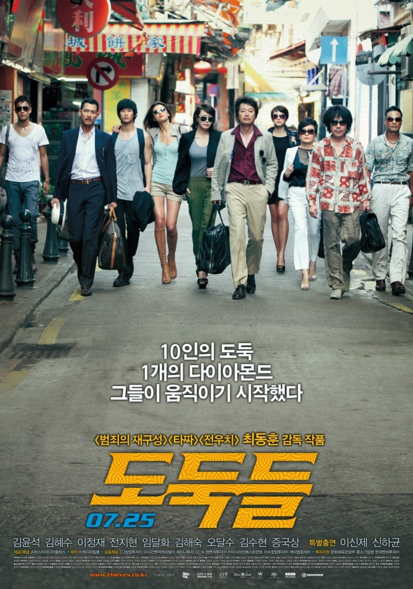
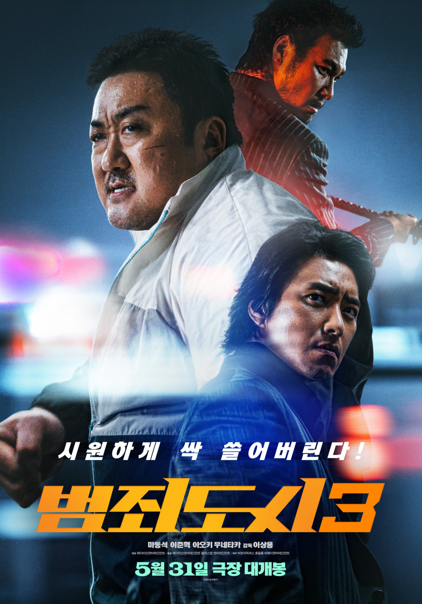

인생 영화 BEST5
| 순위 | 제목 | 포스터 | 줄거리 | 바로가기 |
|---|---|---|---|---|
| 1 | 극한직업 | 
|
불철주야 달리고 구르지만 실적은 바닥, 급기야 해체 위기를 맞는 마약반!
더 이상 물러설 곳이 없는 팀의 맏형 고반장은 국제 범죄조직의 국내 마약 밀반입 정황을 포착하고 장형사, 마형사, 영호, 재훈까지 4명의 팀원들과 함께 잠복 수사에 나선다. 마약반은 24시간 감시를 위해 범죄조직의 아지트 앞 치킨집을 인수해 위장 창업을 하게 되고, 뜻밖의 절대미각을 지닌 마형사의 숨은 재능으로 치킨집은 일약 맛집으로 입소문이 나기 시작한다. 수사는 뒷전, 치킨장사로 눈코 뜰 새 없이 바빠진 마약반에게 어느 날 절호의 기회가 찾아오는데… 범인을 잡을 것인가, 닭을 잡을 것인가! |
극한직업 |
| 2 | 도둑들 |  | 한 팀으로 활동 중인 한국의 도둑 뽀빠이와 예니콜, 씹던껌, 잠파노.
미술관을 터는데 멋지게 성공한 이들은 뽀빠이의 과거 파트너였던 마카오박이 제안한 홍콩에서의 새로운 계획을 듣게 된다. 여기에 마카오박이 초대하지 않은 손님, 감옥에서 막 출소한 금고털이 팹시가 합류하고 5명은 각자 인생 최고의 반전을 꿈꾸며 홍콩으로 향한다. 홍콩에서 한국 도둑들을 기다리고 있는 4인조 최고의 전문가들이 세팅된 가운데 서로에 대한 경계를 늦추지 않는 한국과 중국의 도둑들. 팽팽히 흐르는 긴장감 속에 나타난 마카오박은 자신이 계획한 목표물을 밝힌다. 그것은 마카오 카지노에 숨겨진 희대의 다이아몬드 <태양의 눈물>. 성공을 장담할 수 없는 위험천만한 계획이지만 2천만 달러의 달콤한 제안을 거부할 수 없는 이들은 태양의 눈물을 훔치기 위한 작업에 착수한다. 훔치기 위해 모였지만 목적은 서로 다른 10인의 도둑들은 서서히 자신만의 플랜을 세우기 시작하는데… |
도둑들 |
| 3 | 범죄도시 |  | 대체불가 괴물형사 마석도, 서울 광수대로 발탁! 베트남 납치 살해범 검거 후 7년 뒤,
‘마석도’(마동석)는 새로운 팀원들과 함께 살인사건을 조사한다. 사건 조사 중, ‘마석도’는 신종 마약 사건이 연루되었음을 알게 되고 수사를 확대한다. 한편, 마약 사건의 배후인 '주성철'(이준혁)은 계속해서 판을 키워가고 약을 유통하던 일본 조직과 '리키'(아오키 무네타카)까지 한국에 들어오며 사건의 규모는 점점 더 커져가는데... 나쁜 놈들 잡는 데 이유 없고 제한 없다. 커진 판도 시원하게 싹 쓸어버린다! |
범죄도시 |
| 4 | 공조 | 
|
공조 이즈 백! 이번엔 삼각 공조다!
남한으로 숨어든 글로벌 범죄 조직을 잡기 위해 새로운 공조 수사에 투입된 북한 형사 ‘림철령’. 수사 중의 실수로 사이버수사대로 전출됐던 남한 형사 ‘강진태’는 광수대 복귀를 위해 모두가 기피하는 ‘철령’의 파트너를 자청한다. 이렇게 다시 공조하게 된 ‘철령’과 ‘진태’! ‘철령’과 재회한 ‘민영’의 마음도 불타오르는 가운데, ‘철령’과 ‘진태’는 여전히 서로의 속내를 의심하면서도 나름 그럴싸한 공조 수사를 펼친다. 드디어 범죄 조직 리더인 ‘장명준’의 은신처를 찾아내려는 찰나, 미국에서 날아온 FBI 소속 ‘잭’이 그들 앞에 나타나는데…! 아직도 짠내 나는 남한 형사, 여전한 엘리트 북한 형사, 그리고 FBI 소속 해외파 형사까지! 각자의 목적으로 뭉친 그들의 짜릿한 공조 수사가 시작된다! |
공조 |
| 5 | 엑시트 | 대학교 산악 동아리 에이스 출신이지만 졸업 후 몇 년째 취업 실패로 눈칫밥만 먹는 용남은
온 가족이 참석한 어머니의 칠순 잔치에서 연회장 직원으로 취업한 동아리 후배 의주를 만난다. 어색한 재회도 잠시, 칠순 잔치가 무르익던 중 의문의 연기가 빌딩에서 피어 오르며 피할 새도 없이 순식간에 도심 전체는 유독가스로 뒤덮여 일대혼란에 휩싸이게 된다. 용남과 의주는 산악 동아리 시절 쌓아 뒀던 모든 체력과 스킬을 동원해 탈출을 향한 기지를 발휘하기 시작하는데… |
엑시트 | |